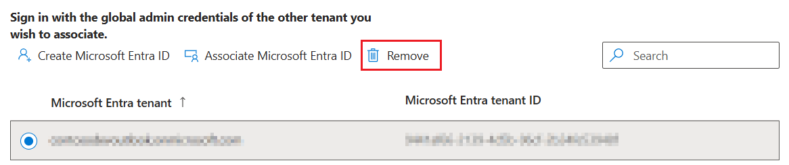

Remove Microsoft Entra ID tenant from Partner Center
After you have associated a Microsoft Entra ID tenant with your Partner Center account, you can remove existing tenants from the Tenants page.
Any user who has the Manager role for a Partner Center account can remove Microsoft Entra ID tenants from the account.
Important
When you remove a tenant, all users that were added to the Partner Center account from that tenant will no longer be able to sign in to the account.
To remove a tenant, find its name on the Tenants page (in Account settings), then select the tenant to be removed and click on Remove. You’ll be prompted to confirm that you want to remove the tenant. Once you do so, no users in that tenant will be able to sign into the Partner Center account, and any permissions you have configured for those users will be removed.

Tip
You can’t remove a tenant if you are currently signed into Partner Center using an account in the same tenant. To remove a tenant, you must sign in to Partner Center as a Manager for another tenant that is associated with the account. If there is only one tenant associated with the account, that tenant can only be removed after signing in with the Microsoft account that opened the account.